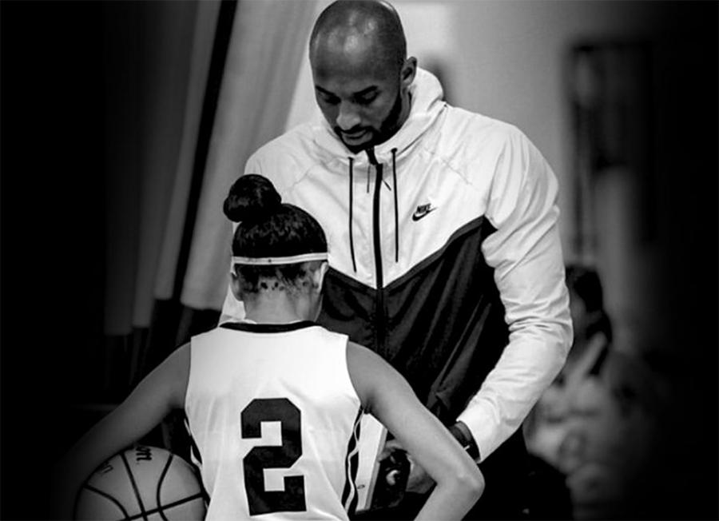

One year later, the tragic helicopter crash that killed nine people remains a raw and painful memory for the Mambas. Kobe Bryant left a legacy that could intail many lifetimes. He left it all on the floor and was planning to do the same off the floor. In mermory of Kobe, Gianni, and the nine others killed.